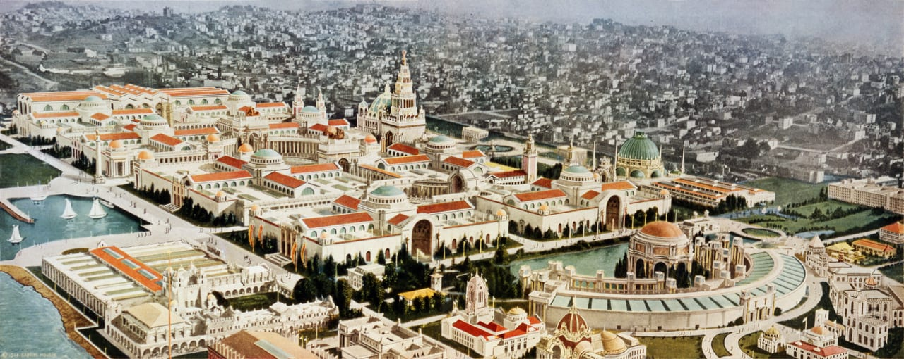
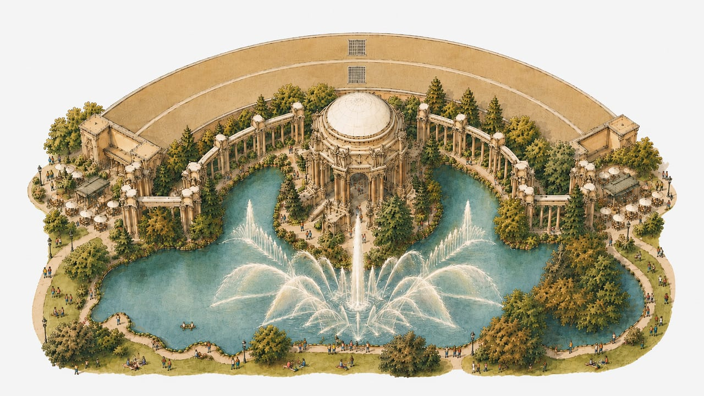
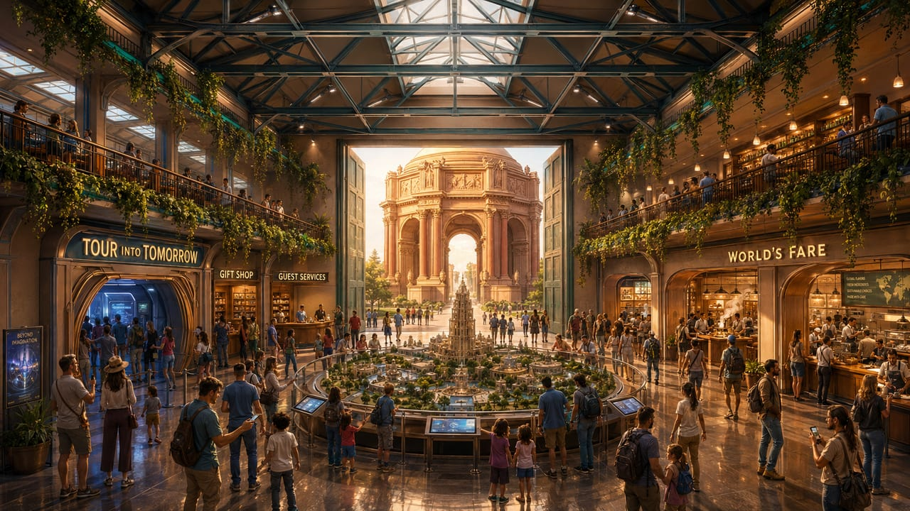
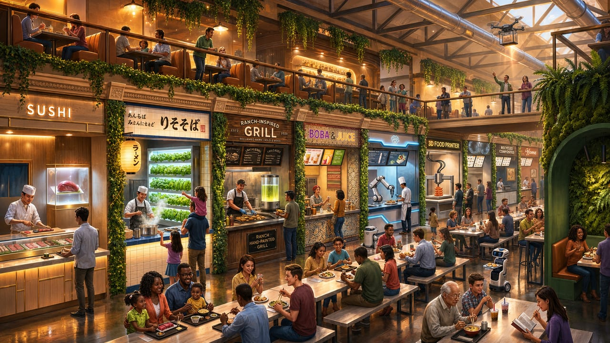
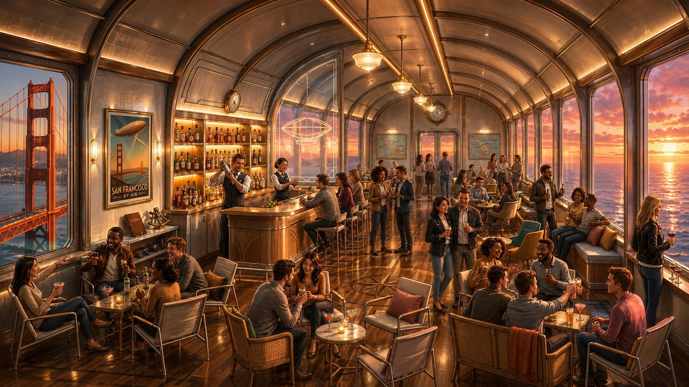
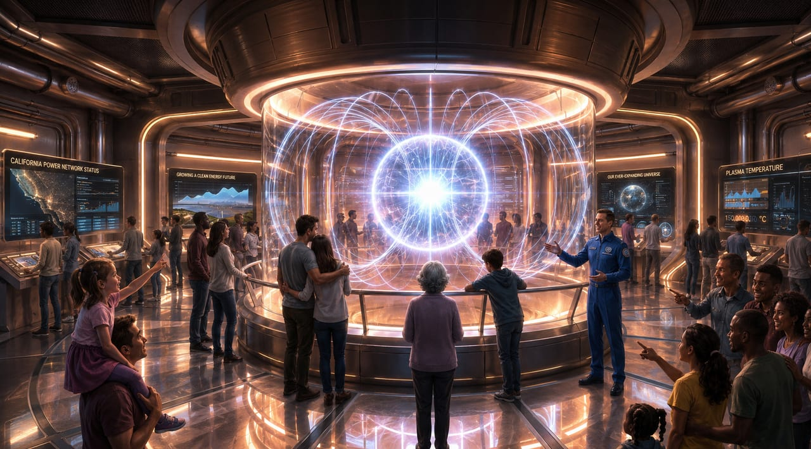
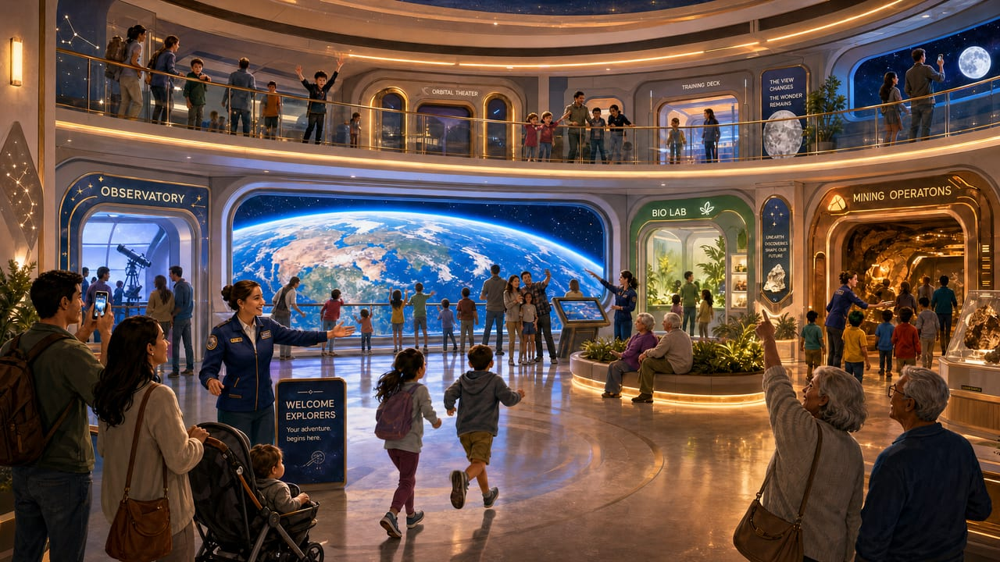
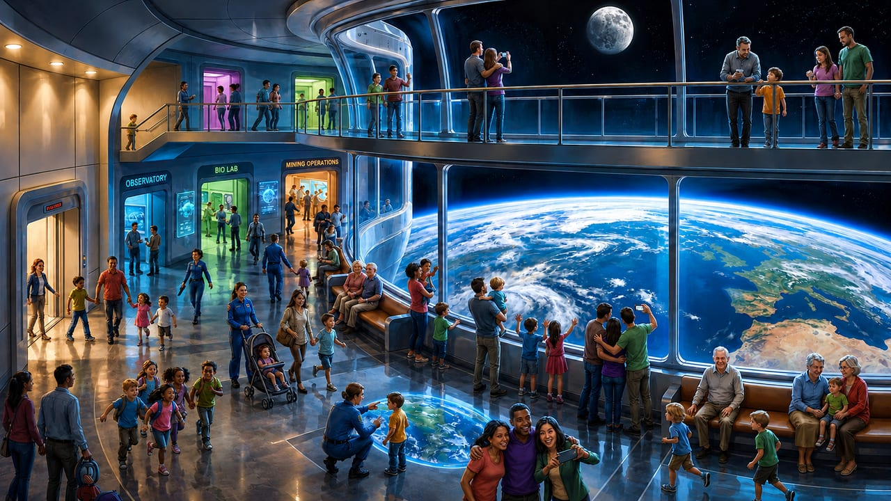
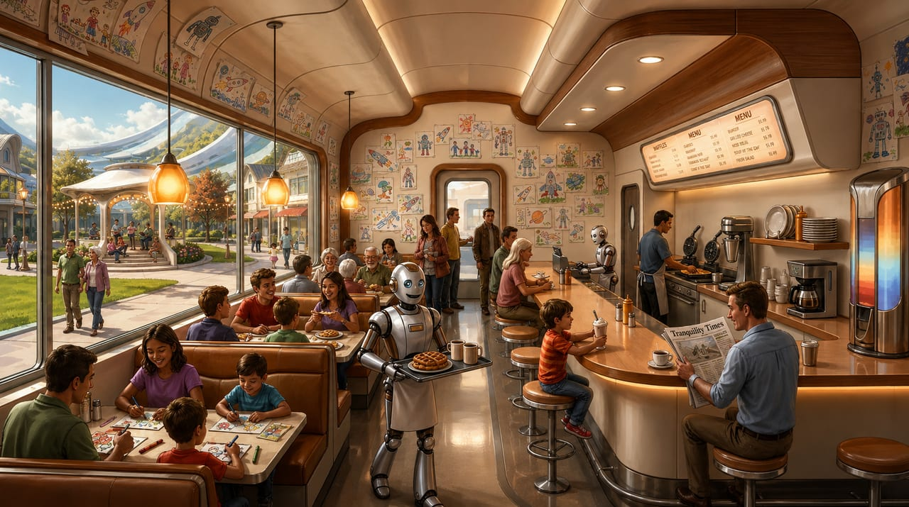

A new civic destination for San Francisco at the Palace of Fine Arts
A place to enjoy with your kids, family, and friends to experience beauty, wonder, and hope for the future.
In 1915, San Francisco invited the world to visit a similar place.

The Panama-Pacific International Exposition celebrated human achievement and our spirit of possibility.
The last building standing from that fair is the Palace of Fine Arts.
It’s time to write its next chapter.
Welcome to the Future
Our vision for San Francisco’s new home of progress.
Palace of Fine Arts · 2030

The Palace has been reimagined to celebrate the best San Francisco has to offer the world.
Every detail of the grounds has been restored — one of the most beautiful public spaces in the country, open to all, from morning to night.
Inside, the Palace comes alive — a soaring atrium, over 60 food stalls celebrating Bay Area culinary culture, and themed dining on the mezzanine above.



Tour into Tomorrow is an immersive journey into the not-too-distant future — every detail inspired by real breakthroughs from real teams across the Bay Area.




Future Lab is where this inspiration becomes action — connecting you directly with the scientists, engineers, and builders shaping what comes next.
Every visit leaves you with a sense of wonder — and a reason to come back.
Help write the next chapter in the story of San Francisco.
We have a once-in-a-generation opportunity to build San Francisco’s next great cultural institution.
We’re assembling a coalition of founders, funders, and builders to bring it to life.
If you’d like to play a part, I’d love to meet you.
Cameron Wiese